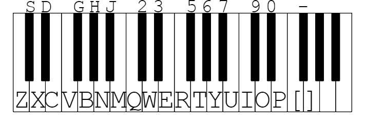

Welcome to Piano Visualizer!
By Archimedes Li
Play music using the keyboard, including digits and letters! You can also choose to uploada file or use a sample song to play as a background track. Toggle this menu with the spacebar.
ORPlay music using the keyboard, including digits and letters! You can also choose to uploada file or use a sample song to play as a background track. Toggle this menu with the spacebar.
OR